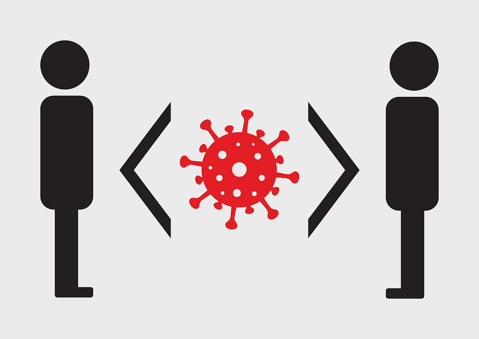
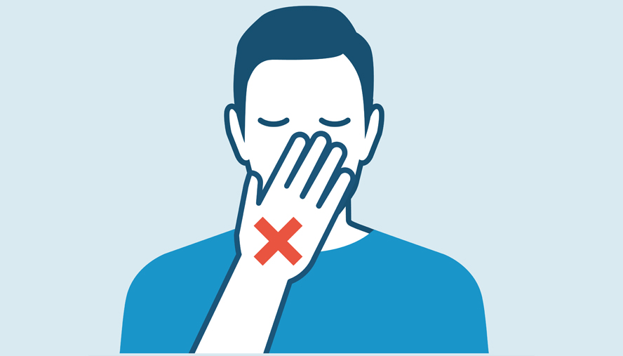

You can reduce your chances of being infected or spreading COVID-19 by taking some simple precautions:
1.) Regularly and thoroughly clean your hands with an alcohol-based hand rub or wash them with soap and water.
Why?
Washing your hands with soap and water or using alcohol-based hand rub kills viruses that may be on your hands.

2.) Maintain at least 1 metre (3 feet) distance between yourself and others.
Why?
When someone coughs, sneezes, or speaks they spray small liquid droplets from their nose or mouth which may contain virus. If you are too close, you can breathe in the droplets, including the COVID-19 virus if the person has the disease.

3.) Avoid going to crowded places.
Why?
Where people come together in crowds, you are more likely to come into close contact with someone that has COIVD-19 and it is more difficult to maintain physical distance of 1 metre (3 feet).

4.) Avoid touching eyes, nose and mouth.
Why?
Hands touch many surfaces and can pick up viruses. Once contaminated, hands can transfer the virus to your eyes, nose or mouth. From there, the virus can enter your body and infect you.

5.) Make sure you, and the people around you, follow good respiratory hygiene. This means covering your mouth and nose with your bent elbow or tissue when you cough or sneeze. Then dispose of the used tissue immediately and wash your hands.
Why?
Droplets spread virus. By following good respiratory hygiene, you protect the people around you from viruses such as cold, flu and COVID-19.

6.) Stay home and self-isolate even with minor symptoms such as cough, headache, mild fever, until you recover. Have someone bring you supplies. If you need to leave your house, wear a mask to avoid infecting others.
Why?
Avoiding contact with others will protect them from possible COVID-19 and other viruses.
7.) If you have a fever, cough and difficulty breathing, seek medical attention, but call by telephone in advance if possible and follow the directions of your local health authority.
Why?
National and local authorities will have the most up to date information on the situation in your area. Calling in advance will allow your health care provider to quickly direct you to the right health facility. This will also protect you and help prevent spread of viruses and other infections.

8.) Keep up to date on the latest information from trusted sources, such as WHO or your local and national health authorities.
Why?
Local and national authorities are best placed to advise on what people in your area should be doing to protect themselves.